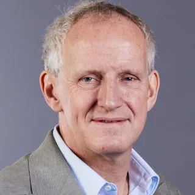
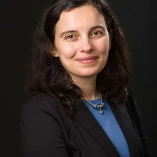
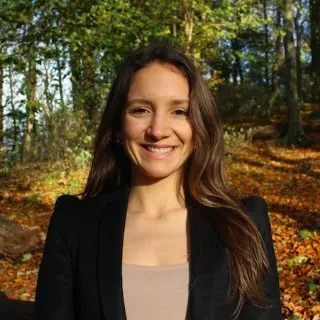
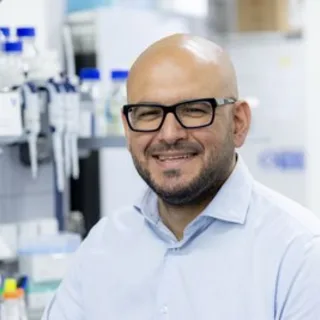

Selection Framework
- Direct PFIC or genetic cholestasis clinical/research program.
- PFIC4/TJP2 publication, disease modeling, variant interpretation, or original discovery role.
- PFIC trial participation or registry/network role: MARCH-PFIC, PEDFIC, LOGIC/ChiLDReN, NAPPED, TreatFIC, PFIC Network advisory/scientific work.
- Pediatric hepatology, transplant hepatology, biliary diversion or hepatobiliary surgery, nutrition, genetics, and HCC-surveillance capacity.
- Accessible second-opinion or consultation path.
Highest-signal Centers to Evaluate
| Logo | Center | Main location | Public evidence | PFIC4-specific read |
|---|---|---|---|---|
| Cincinnati Children's Rare Liver Disease / PFIC Research Center | Cincinnati, Ohio, United States | PFIC-focused integrated care/research center; PFIC clinic goal, registry, translational research, clinical trials, 1,447-gene hereditary liver panel, variant-validation pipeline, iPSC-derived hepatocytes, liver organoids, zebrafish, and mouse models. MARCH-PFIC site; ChiLDReN Cincinnati site PI Alexander Miethke. | Strong U.S. signal for PFIC genetic diagnosis, translational modeling, clinical trials, and transplant integration. | |
| King's College Hospital / King's College London | London, England, United Kingdom | Original TJP2/PFIC4 discovery group; liver molecular genetics tied to clinical hepatology and multidisciplinary management; MARCH-PFIC site. | Strong signal for TJP2 genetics, molecular hepatology, histopathology/genotype-phenotype interpretation, and pediatric-to-adult rare liver disease expertise. | |
| UMC Groningen / Beatrix Children's Hospital | Groningen, Netherlands | NAPPED and TreatFIC initiation; familial cholestatic syndromes, enterohepatic circulation, transplant, prognosis, and treatment-response work. | Useful for bile-acid response, native-liver survival, biliary diversion, transplant, and TreatFIC-era medication outcomes. | |
| Bicetre Hospital / AP-HP Paris-Saclay / Filfoie CRAVB-CG | Le Kremlin-Bicetre / Paris area, France | French coordinating reference center for biliary atresia and genetic cholestasis with multidisciplinary pediatric hepatology/transplant infrastructure. | Strong European genetic cholestasis reference-center signal. | |
| Children's Hospital Colorado / University of Colorado | Aurora, Colorado, United States | PFIC Network listing; Ronald Sokol chairs PFIC Network Scientific Medical Advisory Board; ChiLDReN network chair/site PI signal. | Strong pediatric cholestasis, nutrition, transplant, and research-network signal. | |
| Texas Children's / Baylor | Houston, Texas, United States | Benjamin Shneider PFIC Network advisory-board role; bile-acid transport and pediatric cholestasis research; ChiLDReN site; Paula Hertel PFIC/ChiLDReN signal. | Relevant to IBAT-response framing and clinical management. | |
| UPMC Children's Pittsburgh | Pittsburgh, Pennsylvania, United States | James Squires PFIC Network advisory-board role; ChiLDReN site; transplant hepatology and Starzl Network signal. Patrick McKiernan has inherited metabolic liver disease and PEDFIC 1 PI evidence. | Strong transplant hepatology, PFIC medication trial, and rare pediatric liver disease network signal. | |
| SickKids / University of Toronto | Toronto, Ontario, Canada | PFIC Network and ChiLDReN site; Binita Kamath and Simon Ling were original TJP2/PFIC4 discovery authors. | Strong pediatric hepatology and original TJP2 discovery signal. | |
| UCSF / UCSF Benioff Children's | San Francisco, California, United States | PFIC Network and ChiLDReN site; Laura Bull is original TJP2/PFIC4 discovery author and genetic cholestasis researcher. | Strong liver genetics and pediatric hepatology signal. | |
| Multiple centers | Other PFIC Network/ChiLDReN regional centers | Los Angeles, Philadelphia, Seattle, Indianapolis, Chicago, Atlanta, Salt Lake City, and St. Louis, United States | CHLA, CHOP, Seattle, Riley/Indiana, Lurie Chicago, Children's Healthcare of Atlanta, Primary Children's/Utah, and SLU/Cardinal Glennon have PFIC Network research-network or ChiLDReN signal. | Verify current PFIC4/TJP2 case experience, transplant capacity, and registry/trial access. |
| Mayo Clinic Pediatric Liver Clinic | Rochester, Minnesota, United States | Familial intrahepatic cholestasis conditions, advanced hepatology/transplant certification, multidisciplinary pediatric liver care, living-donor transplant capability, and transition to adult congenital liver care. | Good general pediatric liver/transplant signal; PFIC-specific public evidence appears less direct. |
Named Experts and Evidence Signal
| Photo | Name | Affiliation | Main location | Evidence signal |
|---|---|---|---|---|
| Richard J. Thompson | King's College London / KCH | London, England, United Kingdom | Original TJP2/PFIC4 discovery senior author; liver molecular genetics; PFIC Network advisory board; MARCH-PFIC author. | |
| Laura N. Bull | UCSF | San Francisco, California, United States | Original TJP2/PFIC4 discovery author; PFIC Network advisory board; cholestasis genetics. | |
| Ronald J. Sokol | Children's Hospital Colorado | Aurora, Colorado, United States | PFIC Network advisory-board chair; ChiLDReN leadership; original TJP2 discovery author. | |
 | Henkjan J. Verkade / Bettina Hansen | UMC Groningen / Toronto-Erasmus context | Groningen, Netherlands; Toronto, Canada / Rotterdam, Netherlands research context | NAPPED/TreatFIC outcome and natural-history leadership. |
| Akihiro Asai / Chunyue Yin | Cincinnati Children's | Cincinnati, Ohio, United States | PFIC disease modeling, TJP2 deficiency model involvement, liver biology, cholestasis, molecular genetics. | |
| Alexander G. Miethke | Cincinnati Children's | Cincinnati, Ohio, United States | ChiLDReN site PI; liver transplant medical director; pediatric genetic liver disease/fibrosis biomarker research. | |
| No local headshot found | Emmanuel Gonzales / Emmanuel Jacquemin | Bicetre / Paris-Saclay | Le Kremlin-Bicetre / Paris area, France | Genetic cholestasis and rare pediatric liver disease network leadership. |
| Benjamin L. Shneider / Paula Hertel | Texas Children's / Baylor | Houston, Texas, United States | Bile-acid transport, intrahepatic cholestasis, pediatric cholestasis, ChiLDReN, PFIC education. | |
| No local headshot found | James E. Squires / Patrick J. McKiernan | UPMC Children's Pittsburgh | Pittsburgh, Pennsylvania, United States | Transplant hepatology, ChiLDReN, Starzl Network, PEDFIC PI signal. |
| Binita Kamath / Simon Ling | SickKids / University of Toronto | Toronto, Ontario, Canada | Original TJP2 discovery authors and ChiLDReN investigators. | |
 | Silvia Vilarinho | Yale | New Haven, Connecticut, United States | PFIC Network advisory board; adult PFIC and liver genomics. |
  | Gitta Lubke / Antonia Felzen / Pasquale Piccolo | PFIC Network, UMC Groningen, TIGEM | PFIC Network; Groningen, Netherlands; Pozzuoli, Italy | Registry, TreatFIC, patient-centered research, and root-cause therapy research direction. |
Recent Research Summary
| Area | Current read |
|---|---|
| PFIC4/TJP2 phenotype | Marked heterogeneity remains central. The 2025 missense-variant report reinforces WES-based diagnosis and close monitoring. |
| Mechanism | PFIC4 is framed as tight-junction/barrier dysfunction rather than a primary canalicular pump defect; TJP2 deficiency can disrupt CLDN1 localization and canalicular tight-junction integrity. |
| IBAT inhibitors | MARCH-PFIC provides randomized all-PFIC evidence for maralixibat and included TJP2/PFIC4. PFIC4 n is small. Odevixibat has PFIC labeling and PFIC1/PFIC2 randomized evidence with broader/open-label support. |
| Natural history/outcomes | NAPPED and TreatFIC remain central for genotype-severity, serum bile-acid response, native-liver survival, biliary diversion, and transplant questions. |
| Guidelines | EASL 2024 and GeneReviews support genetic testing, specialist referral, nutrition/vitamin care, pruritus management, surveillance, and transplant escalation. |
| HCC surveillance | TJP2/PFIC4 has published HCC reports and GeneReviews flags HCC surveillance. Interval and risk stratification remain center-specific. |
| Patient-centered research | PFIC Network IMPACT/PATH is moving toward comparative effectiveness work including medications, surgeries, nutrition, mental-health/itch support, financial burden, access delays, sleep, skin, school, and caregiver quality of life. |
| Root-cause therapies | Gene editing/gene therapy remains investigational and more visible for other subtypes such as PFIC3. No approved therapy repairs TJP2. |
Suggested Second-opinion Packet
- Genetic report with transcript, variant nomenclature, zygosity, classification, parental testing, and reanalysis history.
- Longitudinal serum bile acids, total/direct bilirubin, AST/ALT, GGT, INR, albumin, platelets, CBC, AFP.
- Growth, nutrition, fat-soluble vitamins A/D/E/K, INR/vitamin K response, and bone health if available.
- Medication trials and response: UDCA, rifampin, bile-acid binders, also called bile-acid sequestrants, such as cholestyramine, colesevelam, and colestipol, naltrexone/sertraline/hydroxyzine/other itch agents, maralixibat/odevixibat dose, adverse effects, diarrhea/dehydration.
- Pruritus/sleep metrics, imaging, elastography, pathology/immunostaining, and outside slide review status.
- Specific questions: IBAT strategy, biliary diversion candidacy, HCC surveillance interval, transplant triggers, studies/registries, and transition-to-adult plan.
Sources Used
- PFIC Network Global PFIC Hospital Directory
- PFIC Network Scientific Medical Advisory Board
- Cincinnati Children's rare liver disease center
- King's College London Liver Molecular Genetics
- ChiLDReN participating centers
- Filfoie rare liver disease expert centers
- MARCH-PFIC trial
- IBAT inhibitors in pediatric cholestatic disease, 2026
- PFIC genotype/clinical variant review
- PFIC4 missense variant, 2025
- PFIC Network Project IMPACT/PATH
Unresolved Questions
- Current center-by-center PFIC4/TJP2 patient volume is not public.
- Current availability of remote second opinions needs direct confirmation.
- The best HCC surveillance interval for a specific PFIC4 patient remains a treating-center decision.